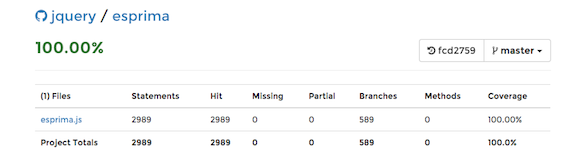
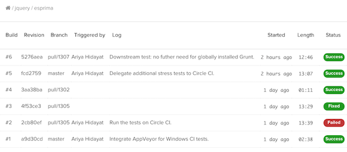

Unit tests and regression tests
Thousands of Esprima's unit tests and regression tests are executed in a Node.js environment on Linux using Travis CI and on Windows using AppVeyor. It is integrated with the pull request workflow of GitHub so that a change that causes one or more failing tests will be flagged appropriately.
Travis CI build information of Esprima is available at
travis-ci.org/jquery/esprima.
AppVeyor build status of Esprima is available at
ci.appveyor.com/project/ariya/esprima.
Code coverage tracking
To prevent any potential coverage regression, the information on the code coverage after running the entire unit tests is posted to Codecov.io. The coverage analysis itself is running on Circle CI. Using Codecov.io integration with Github, the change in code coverage (whether it stays the same, regresses, or improves) for every pull request will be automatically posted as a comment.
Codecov.io dashboard for Esprima is available at codecov.io/github/jquery/esprima.
Downstream project tests
There are many widely used open-source projects out there, from Istanbul to Recast, which depend on Esprima. An unknown issue in Esprima during its development, that is not caught by its own test suite, may cause those downstream projects to regress. To prevent this from happening, the development version of Esprima is used to run the test suite of a selected set of downstream projects. This is running on Circle CI and the entire process typically takes around 13 minutes to complete.
Circle CI build status of Esprima is available at circleci.com/gh/jquery/esprima.
Cross-browser tests
To ensure that Esprima works well with the major popular web browsers out there, its test suite is also executed on a number of different browsers via Sauce Labs. This test is orchestrated using another hosted CI, drone.io.
The build history at drone.io is available at drone.io/github.com/jquery/esprima.
The following browser matrix summarizes the test coverage. The full dashboard is available at saucelabs.com/u/esprima.

Every single commit, including the one in every pull request, is subjected to a set of tests to ensure the quality of the corresponding changes.